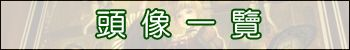

<lift:surround with="default" at="content">
  <head>
    <style type="text/css">
    <!--
      body {
        background-repeat: no-repeat;
        background-position: 100% 100%;
        background-attachment: fixed }
      fieldset{
        filter:alpha(opacity=80,enabled=80) }
    -->
    </style>
  </head>
  <h4>用戶圖像一覽</h4>  
  <a href="main.html">←返回</a><br/>
  
  <br/>
  <br/>
  <div align="center">
  <table border="0" cellpadding="0" cellspacing="0">
   <tr>
    <td align="right">
     <span style="font-size:12pt;color:blue;">→頭像登錄</span>
    </td>
   </tr>

   <tr>
    <td>
     <fieldset style="background-color:white;border-color:black;border-width:1px;border-style:solid;">
     <legend><strong style="font-size:20px;font-weight:bold;">用戶圖像一覽</strong></legend>

     <table border="0" style="font-size:12pt;">
     <lift:UserIconController.list/>
     </table>
     </fieldset>
    </td>
   </tr>
  </table>
  </div>
</lift:surround>